In this lab and the next lab, you will work on a chatroom web application
The application is divided into two parts:
User registration and authentication
Online user management and chatroom communication
You will focus on the first part in this lab
Here is a video showing you the functionalities you will work on in this lab:
(The dropdown of the avatar selection is not shown in the above video)
Although the video has mainly demonstrated the signing in and out operations in the frontend, i.e. the web page,
the majority of the work you will do is on the server-side
The first time you arrive in the application, you will be asked to sign in or register
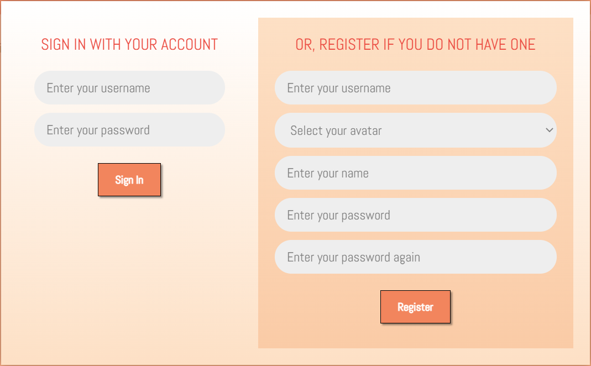
If you do not have an account, you will need to register for a new account
after filling in the required information
If you already have an account, or right after registration, you will be able to sign in
using your account information
After signing in, you will not be able to do much at the moment because you will
not work on the chat functions until the next lab
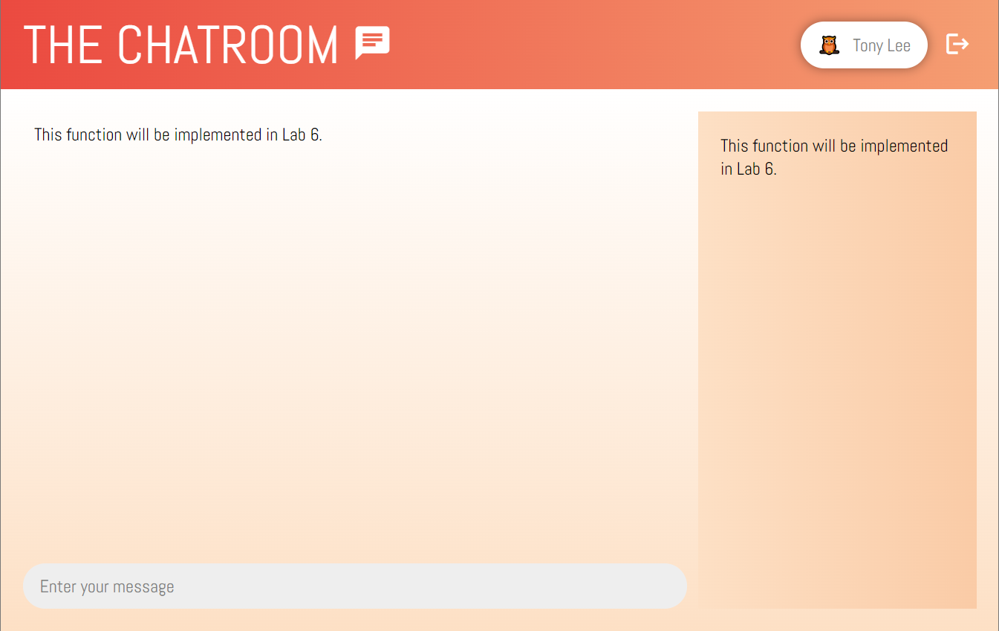
Even if you refresh the page, you will still stay signed in the system
If you want to, you can sign out of the application by selecting the sign out button,
which is at the top right hand corner of the web page
All JavaScript files are written in a module pattern structure
For example, the file avatar.js has this structure:
const Avatar = (function() {
// This stores the available avatars
const avatars = { ... };
// This function populates the avatars to a select box
const populate = function(select) { ... };
// This function gets the code from the avatar name
const getCode = function(name) { ... };
return { populate, getCode };
})();
Because of the IIFE, you can then use, for example, Avatar.populate() in other parts of the code
In this application, this JavaScript file is mainly used to provide the list of avatars
(a variety of animal icons) that the user can choose from
You can see the list by clicking on the 'Select your avatar' box in the registration form, i.e.:
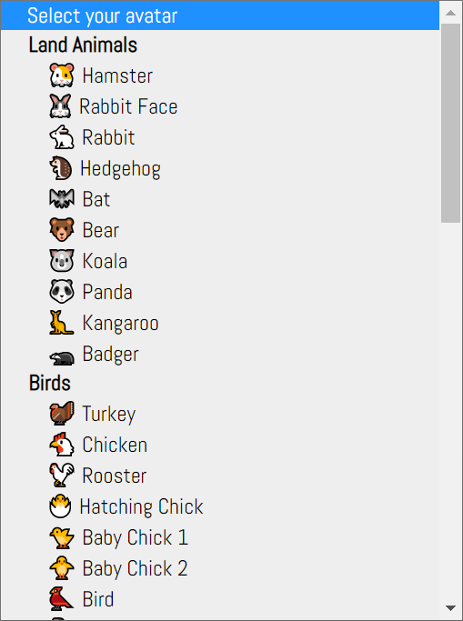
Instead of images, these avatars are unicode characters
For example, the koala image 🐨 can be put in a web page
using the HTML entity 🐨
You can find all avatars' code and description in the avatars object inside the JavaScript file
The file ui.js handles all UI related code such as
setting up events, showing/hiding a component and so on
There are 'UI components', i.e.
SignInForm and UserPanel, created inside the file but
the main module is the UI module
SignInForm represents the sign-in and registration form, and
UserPanel represents the user account shown at the top right hand corner
The UI module starts the initialization of everything on the page
The last two JavaScript files are the two most important in this lab:
registration.js and authentication.js
As the names suggest, they handle user registration and user authentication respectively
registration.js provides a single function called register
that is used when the user registers for a new account
These modules are needed when you work on the server endpoints later
Altogether, you need to implement four server endpoints, which are listed below with
their specifications:
Description
HTTP Method
Path
Input
Output
Register for a new account
POST
/register
New user account: {username, avatar, name, password}
If successful: {status: "success"}
otherwise, return the error message: {status: "error", error}
Sign in the chatroom
POST
/signin
Username/password: {username, password}
If successful, return the user account: {status: "success", user : {username, avatar, name}}
otherwise, return the error message: {status: "error", error}
Validate a sign-in session
GET
/validate
None
If successful, return the user account: {status: "success", user : {username, avatar, name}}
otherwise, return the error message: {status: "error", error}
Sign out the chatroom
GET
/signout
None
Always return this: {status: "success"}
The template of the above paths have been given to you in the code:
Each user inside the file is stored as a key and value pair, with the key being the username
and the value being the other information of the user, i.e.:
username: { avatar, name, password }
The password value is stored as a hashed password for enhanced security
The passwords for both of the given accounts, in plain text form, are pwd
in case you want to use them to test your system
1.4. Using the Application
Starting the Server
To use the chatroom application, you need to start the web server
Before doing so, you need to make sure you have installed the following packages using npm:
express
npm install express
bcrypt
npm install bcrypt
express-session
npm install express-session
After installing the packages, you should have the content of the file package.json looking similar to this:
You do not need any page in the URL as the default page is the given file index.html
If you have successfully started the server, you should see this display in the browser:
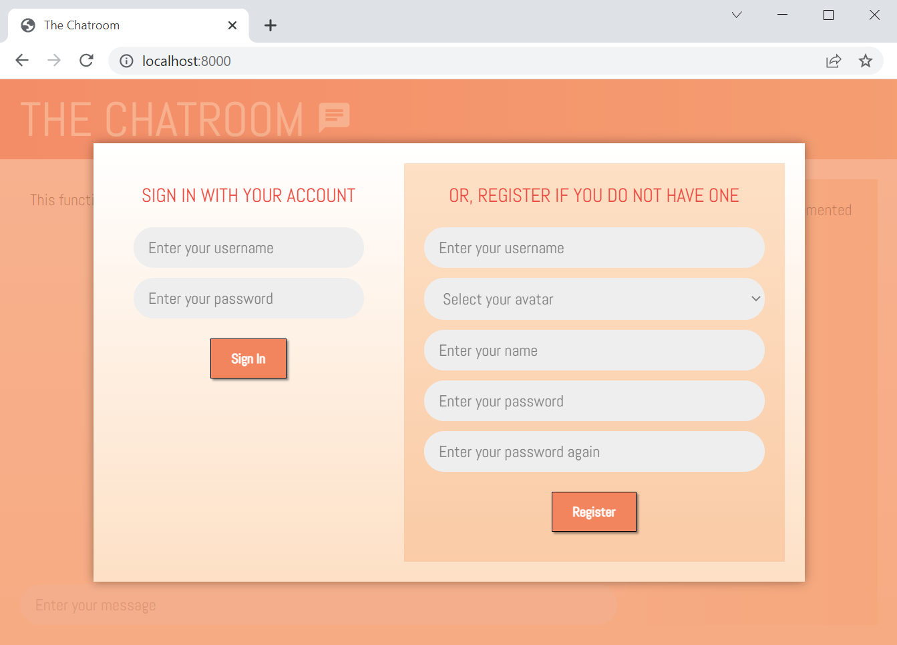
Both the sign-in and registration functions are not working
so you will not be able to do anything on the page
To make it work, you will first build the registration and then the authentication of the system
2. User Registration
In this part of the lab, you will work on this server endpoint:
Description
HTTP Method
Path
Input
Output
Register for a new account
POST
/register
New user account: {username, avatar, name, password}
If successful: {status: "success"}
otherwise, return the error message: {status: "error", error}
The registration process is illustrated in the following figure:
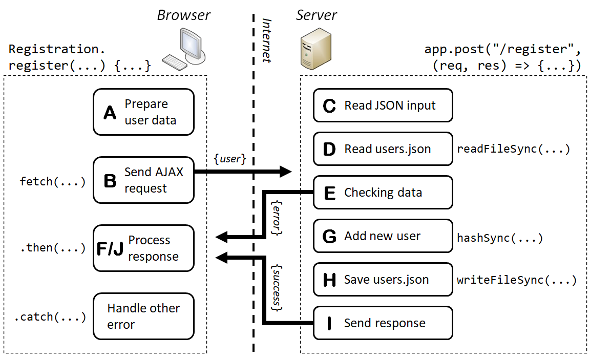
The process is triggered by the user filling in the registration form and clicking on the Register button, for example:
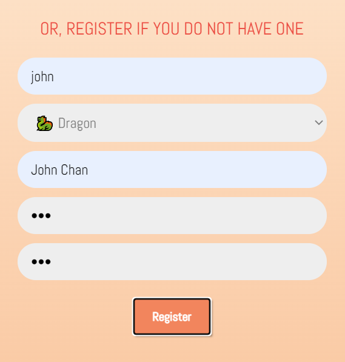
After clicking on the button, the event runs Registration.register() and the function kicks off the communication between
the browser and the server, which is shown in the figure
The register() function is given to you in registration.js:
const register = function(username, avatar, name, password, onSuccess, onError) {
...
if (onError) onError("This function is not yet implemented.");
};
There are 6 parameters in the register() function
The first 4 parameters of the function are the data fields from the registration form
The last 2 parameters are callback functions for handling the successful and error situations
In the given code, it always reports an error by calling the error callback function onError()
On the server, it is handled by the endpoint app.get("/register", ...), which is shown below:
E. Checking for the User Data Correctness (Server)
Before adding the user, you need to make sure the user data is valid
Here are three things that you need to check:
Username, avatar, name and password are not empty
The username contains only underscores, letters or numbers
You will find the given function containWordCharsOnly() useful here
The username does not exist in the current list of users
You can do this using the in operator on the users' object that you have read in the previous step
If any of the above is not satisfied, you will need to return an error to the browser
This can be done by req.json() like this:
res.json({ status: "error", error: /* the error message */ });
You will use an appropriate error message for each of the above cases
F. Processing Any Error Returned by the Server (Browser)
Now that you have sent some JSON error responses to the browser
It would be great if you can show them, back in the browser
Remember that you have used the fetch() function inside register()
Inside .then(), you can show the JSON returned by the server like this:
.then((json) => {
console.log(json);
})
For example, if you return this response from the server:
res.json({ status: "error", error: "An error has occurred." });
You will see this in the browser's console:
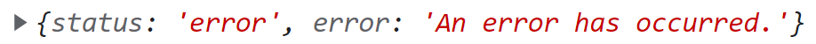
However, we do not want to show this in the console but to show the error in the registration form
To do this, you only need to make use of the onError() callback in the register() function
Therefore, instead of using console.log(), you can use the callback to pass the error back to the UI, like this:
.then((json) => {
if (onError) onError(json.error);
})
After this, any error will be shown at the bottom in the registration form, like the example below:
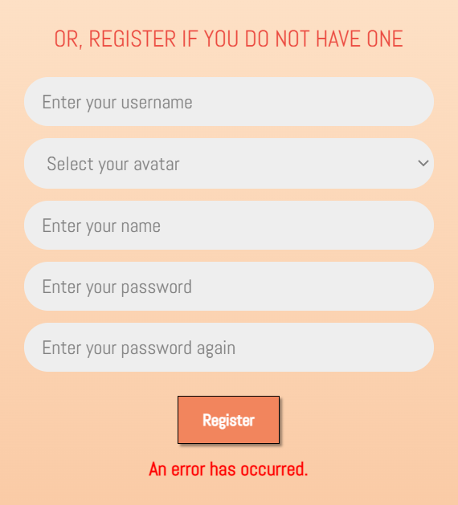
For your work, you should use some meaningful error messages so that the user knows what has gone wrong
At this stage, if you do not enter valid user data in the registration form,
you should be able to have the corresponding error shown at the bottom of the form
G. Adding the New User Account (Server)
After the previous step, the user data should contain some valid values
But you still have one last thing to do before adding the user account to the database
To enhance the security of the system, the password will be 'hashed' before saving
A convenient function called hashSync() from the bcrypt module can hash a password with a salt
You do not need to understand how it works but a password can be hashed using this line of code:
const hash = bcrypt.hashSync(password, 10);
For example, if the password is jcx, a possible hash produced by the function will be:
When the hash is available you will store the hashed password, not the plain text password,
in the JavaScript object and thus the JSON file
H. Saving the users.json File (Server)
Similar to reading the file, you can write the users' object back to users.json
Again, you can refer to the
lecture notes
on how to write the file based on the JavaScript object
After writing the file, you should be able to see the new user added to your users.json
I. Sending a Success Response to the Browser (Server)
You have almost finished the server-side code
After finishing the previous steps, you can safely return a success response to the browser
It is a very simple response that can be sent by a single line of code, i.e.:
res.json({ status: "success" });
In the next step, you will handle this success response back in the browser side
J. Handling the Success Response from the Server (Browser)
This is the last step of the user registration
Your server should have sent back a success response to the browser if the user is added to the server
You can add appropriate code in .then() to handle the response
For example, you can simply test for the status value before running the onSuccess() callback to tell the UI components, e.g.:
.then((json) => {
if (json.status == "success") {
/* Run the onSuccess() callback */
}
else if (onError) onError(json.error);
})
You have now completed the registration process
If you successfully create a new user account, you will
see this message showing at the bottom of the form:
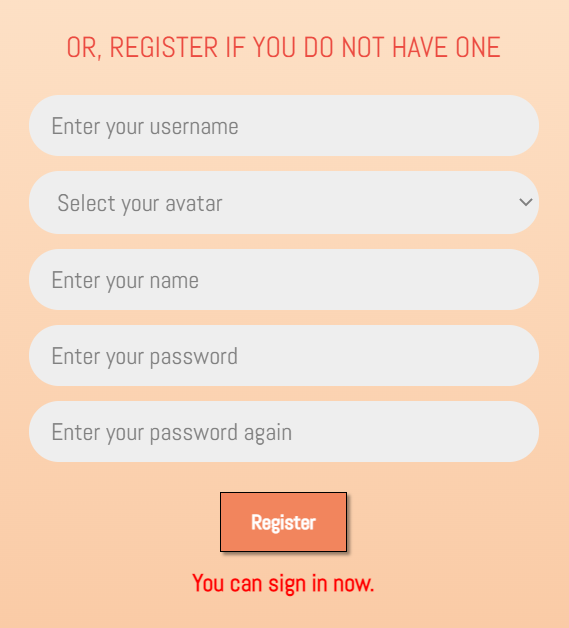
3. User Sign-In
After finishing the user registration function, you should have
a good understanding on how to complete the communication between the browser and the server now
For the rest of the lab, you will complete three more requests, starting with the sign-in request
We don't need to go into every detail of each request because
some of the code is very similar to what you have done for the registration process
Let's start by looking at the sign-in endpoint:
Description
HTTP Method
Path
Input
Output
Sign in the chatroom
POST
/signin
Username/password: {username, password }
If successful, return the user account: {status: "success", user : {username, avatar, name } }
otherwise, return the error message: {status: "error", error }
As you need to send data to the server, this is again a POST request
The process starts by entering the username and password into the sign-in form and then clicking Sign In
Here is an example of the sign-in form:
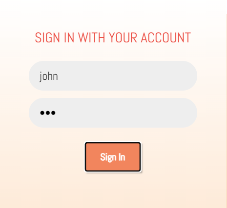
The sign-in process, which is a little bit simpler than the registration process, is shown below:
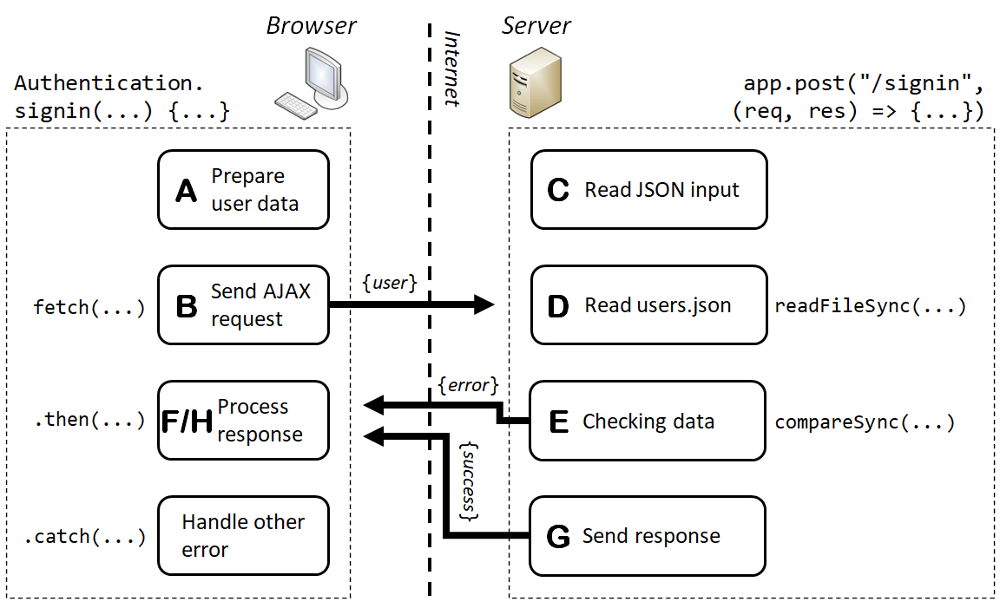
The sign-in request is made inside the function signin(),
which is located in authentication.js, as shown below:
const signin = function(username, password, onSuccess, onError) {
if (onError) onError("This function is not yet implemented.");
};
On the server, the endpoint is handled by this code:
You will complete the above functions similar to what you have done for the user registration
Here are the steps based on the above figure:
Preparing the user data (Browser)
Sending the AJAX request to the server (Browser)
Reading the JSON input from the browser (Server)
Reading the users.json file (Server)
Checking for the username/password values (Server)
Processing any error returned by the server (Browser)
Sending a success response to the browser (Server)
Handling the success response from the server (Browser)
You should be able to complete most of the above by yourself without any problem
We will focus on the ones that are different from the user registration, which are shown in bold above
3.1. Building the Sign-In Process
E. Checking for the Username/Password Values (Server)
At this stage, you should have obtained the users' object from the users.json file
Your task here is to verify the username and password pair
First, you can easily check whether the username is valid by looking for it in the users' object
Again, the in operator is probably very helpful here
Next, you need to check whether the password given to the server is the same as the stored password
However, remember that the password has been stored as a hash, you need to use a special function to help you check that
Similar to the user registration, you can use the bcrypt module to help you with this
It provides a function compareSync() to directly compare a (plain text) password against a hashed password
Here is an example:
const password = /* any plain text password */;
const hashedPassword = /* a hashed password stored in users.json */;
if (!bcrypt.compareSync(password, hashedPassword)) {
/* Passwords are not the same */
});
Then, if either the username does not exist or the password does not match, you will return an error response
G. Sending a Success Response to the Browser (Server)
This is almost the same as the success response for user registration
The difference is here in the sign-in process, you also need to return the user account to the browser
If you directly send the user account to the browser, it will also include the password field
In order to avoid that, you will send the user in this form:
{ username, avatar, name }
That means the response would be sent in this way:
res.json({ status: "success", user: /* the user object */ });
H. Handling the Success Response from the Server (Browser)
From the previous step, the signed-in user account has been returned along with the response
In the code, you need to store the returned user in the closure variable user, i.e.:
.then((json) => {
if (json.status == "success") {
user = /* returned user */;
/* Run the onSuccess() callback */
}
else if (onError) onError(json.error);
})
You only do that when the response is successful
The user account will be used by some functions of some UI components
After completing both the registration and sign-in requests, you can now sign in the system
using existing accounts or registering a new one
4. Maintaining a Session
It seems that the authentication of the application is working well
However, if you reload the page, you will find that you need to sign in again
This does not usually happen with most other websites because it is very common that a session is maintained with the signed-in users
In this part of the lab, you will make a session with the signed-in user
so that he/she does not need to sign in again even after reloading the page
4.1. Adjusting the Sign-In Process
You can use the express-session module to maintain a session easily
In chat_server.js, a session has been set up for you already:
For this session, if you idle for 5 minutes, the session data will be lost
Just having setting up the session is not enough, you will need a 'token'
in the session to let you distinguish between a signed-in session and a normal session
In this application, you will put the signed-in user account in the session as a token
To do that, you need to adjust the sign-in process
Before returning the success response, you need to put the user account into the current session, i.e.:
req.session.user = /* user account */;
Similar to the sign-in process, the user account can be this, without the password:
{ username, avatar, name }
The password should not be stored anywhere apart from users.json
4.2. Making the Validation Request
After putting the user account into the session, you can use it to
find out whether the current session has a user signed-in or not
To do that, a validation request is made whenever the page is loaded
The code has been written in the document ready event:
The validation request is created in the validate() function of the Authentication module
It is relatively simple, as shown by the endpoint below:
Description
HTTP Method
Path
Input
Output
Validate a sign-in session
GET
/validate
None
If successful, return the user account: {status: "success", user : {username, avatar, name}}
otherwise, return the error message: {status: "error", error}
It is a GET request, which returns the user account if it exists, or an error otherwise
If the user has signed-in to the application, you will be able to get the user account from req.session.user
In other words, if req.session.user is not defined, no user has signed-in in the current session
Here is the process of the validation request:
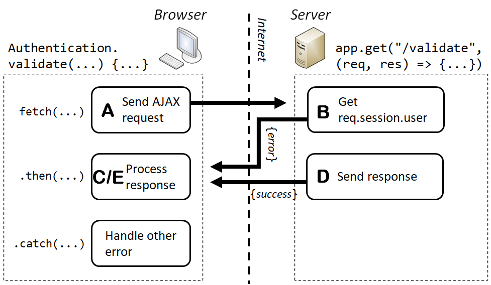
If you have correctly implemented the validation request,
you should be able to retain the user sign-in even after reloading the page
5. User Sign-Out
In the final part of the lab, you will make the sign out request so that the user can sign out from the application
This becomes straightforward as you have gained a lot of experience in developing the previous three AJAX requests
Here is the endpoint of the sign out request:
Description
HTTP Method
Path
Input
Output
Sign out the chatroom
GET
/signout
None
Always return this: {status: "success"}
In this request, the server simply removes the session user and
therefore removing the signed-in status of the session
The server always returns a success response no matter whether the session user exists or not
After using fetch() and when the user successfully signs out,
you need to set the closure variable user back to null
This will be done inside the signout() function in the Authentication module
6. Summary
After finishing everything in this lab, in summary, your application should be able to:
Let a user register a new account if:
This new account has a username, an avatar, a name and a password
The new username contains only underscores, letters or digits
The new username does not exist in the current users JSON file
Let a user sign in if
The username exists in the current users JSON file
The password matches the stored hashed password of the user
Let a user remained signed in even after reloading the page
Let a user sign out of the application
Submission
You do not need to submit the lab. However, this lab will be extended in the next lab, lab 6.
It would be very useful to save a copy of your work, e.g. in a USB or through email.